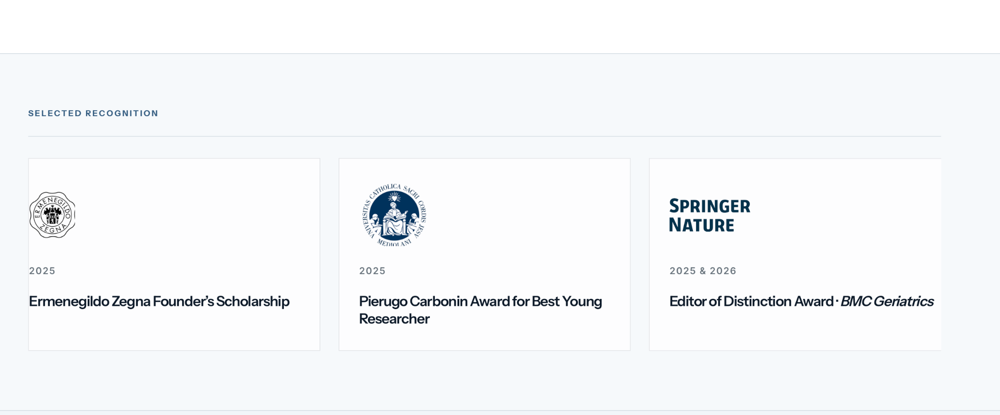

Science for longer, healthier lives.
I study intrinsic capacity and how physical and mental abilities change over time to shape healthy aging and independence.


Bio
I am a geriatrician and epidemiologist studying intrinsic capacity within the World Health Organization healthy aging framework.
I trained at Università Cattolica del Sacro Cuore in Rome, where I earned my medical degree in 2021 and completed my residency in Geriatric Medicine in 2025, both with honors. In the same year, I obtained a Master’s degree in Epidemiology and Biostatistics.
From 2024 to 2025, I worked as an attending physician at Fondazione Policlinico Universitario Agostino Gemelli IRCCS, combining acute geriatric care with outpatient activities focused on chronic disease prevention and healthy longevity.
In January 2026, I joined the Institute on Aging at the University of Florida as a Visiting Research Fellow, supported by the Ermenegildo Zegna Founder’s Scholarship. Since July 2026, I have also been pursuing a PhD by Prior Publication in Medicine at University College Cork.
My research focuses on how intrinsic capacity can be measured across populations, how it changes over time, and how these trajectories relate to mobility, disability, resilience, and other functional outcomes. I am particularly interested in developing measures that are scientifically robust, clinically interpretable, and connected to the biological processes underlying healthy aging.
More broadly, my work explores the biological, behavioral, social, environmental, and policy determinants of healthy aging and longevity.
I also serve as an Editor for BMC Geriatrics.
Selected recognition

Pierugo Carbonin Award for Best Young Researcher
Editor of Distinction Award · BMC Geriatrics
Research
What I study
Measuring Intrinsic Capacity
I study how intrinsic capacity and its domains can be measured across populations, including their multidimensional structure and change over time.
Capacity, Function, and Aging Trajectories
I examine how changes in physical and mental capacities relate to mobility, disability, resilience, and other functional outcomes.
Healthy Aging and Population Health
I study how chronic disease and behavioral, social, environmental, and policy factors shape health across aging populations.

Longevity Brief
Research and ideas for longer, healthier lives.
A curated selection of recent research on healthy aging and longevity.
Latest issue
Issue 01 · August 2026
From Biological Aging to Everyday Independence
From molecular aging to mobility, disability, and independence, the first issue explores how emerging science can help us understand the capacities that matter as people age.


Contact
Get in touch
For research collaborations, invited talks, and academic enquiries.